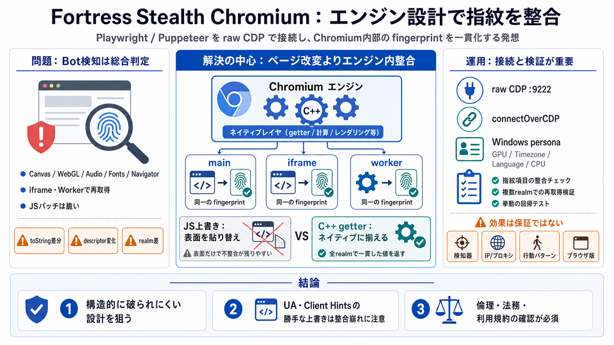

Show HN: Fortress – a stealth Chromium so your agents stop getting blocked · Xela
One browser engine to rule them all Stealth Chromium engine Fortress is a stealth Chromium engine that stops your scrape…

Stealth by Engine Design / エンジン設計
Fortressは、Playwright / Puppeteer等を「stealth Chromium（ステルス化Chromium）」として使うためのCDP接続型エンジンです。ページ改変よりも、Chromium内部で指紋（fingerprint: 指紋）を整合させる方針が中核です。
Bot検知は“総合判定”
Cloudflare / Akamai等の検知器は、driver/binaryの痕跡だけでなく、canvas/WebGL/audio/fonts/navigatorなどのfingerprintと、iframe/worker等の別コンテキストの振る舞いを総合して見ます。
“貼り替え”より“整合”
JavaScriptの上書きは、検知器がネイティブ性を検査するときに破られやすく、toString()の自己開示やディスクリプタ変更、さらに別realmでの取り直しで破綻しがちです。
対策の置き場所
Fortressは、JSの“スプーフィング”ではなく、Chromium内部（C++実装）のネイティブ getter としてfingerprintを揃え、realm間でも一貫した応答を目指します。
ネイティブのままふるまう（構造的に一致させる）
検知器が見ても一貫した挙動（例: 自己開示の揺れを減らす）
差し替え接続
Fortressはraw CDPを使える形（例: :9222）で提供し、Playwright/Puppeteer等はCDPエンドポイントを指すことで、接続レイヤの置換を最小化する想定です。
realm 一貫性の論理
検知器は別realmでプリミティブを取り直して検査できるため、JS上書きでは整合が崩れやすいのに対し、Fortressは同一getterの振る舞い維持を強調します。
“人格”を揃える
FortressはデフォルトのWindows整合ペルソナを一貫して提示し、--uxr-*オプションでGPU・タイムゾーン・言語・ハードウェア並列数などのサーフェス調整が可能だとされています。
小さく、単機能
READMEでは、patches/に小さな単機能パッチが34個あり、build/build.shで再ビルドできるため、再現性と監査しやすさを訴えています。
“回避”の設計中心
JavaScript stealthは“表面を上書き”しがちですが、Fortressは“指紋の整合”をネイティブgetter側へ寄せることで、検知回避の破られどころを構造的に減らす狙いです。
効果は“保証”ではない
資料抜粋では“undetectable”の保証は避けられ、効果は検知器・テスト環境・IP/プロキシ・行動パターンに依存しうると捉えるのが安全です。
最小変更の接続
方針としてはFortressの cdp_url に対し connectOverCDP / connect_over_cdp する差し替え想定です。UAなどを別途渡すと整合が崩れる可能性があるため注意が必要です。
運用設計が“勝敗”
多層要因（fingerprint以外の挙動・ネットワーク・行動パターン）が絡むため、Fortress導入だけで常に成功するとは限りません。gauntlet等でのゲート運用が想定されています。
倫理・法務は別タスク
指紋回避は検知回避に直結するため悪用リスクがあり、利用先サイトの利用規約・アクセス制限・スクレイピング許可の有無を必ず確認してください。必要ならAPI利用や許可申請など、適法な代替も検討が必要です。
参照の置き場（抜粋）
本デッキは、ユーザー提示の「README相当の概要抜粋」を圧縮要約しています。原典で追加の前提・再現条件・免責を確認してください。
raw CDP（例: :9222）、connectOverCDP想定、指紋整合（C++ getter）、persona（--uxr-*）、patches/再ビルド主張
効果評価が検知器と環境に依存しうる、という文脈で言及
“undetectable保証ではない”という注意とセットで説明される前提群
One browser engine to rule them all Stealth Chromium engine Fortress is a stealth Chromium engine that stops your scrape…
**Fortress is a stealth Chromium engine that stops your scrapers and browser agents from getting blocked, with one line …
Hacker News 20 (@betterhn20). 42 views. Show HN: Fortress – a stealth Chromium so your agents stop getting blocked https…
All launches and major changes to Chrome undergo a security review. This page aims to provide guidance for those seeking…
Can chromium forks be trusted, since they use googles code? I am using bromite, a mobile browser but feel suspicious sin…